The Reporting functionality is embedded in an iDoc widget so the user can execute and display reports in his/ her documents.
Create Report
The iDoc is opened in edit mode.
- The user inserts in the iDoc the Reporting widget selecting it from the widgets section (1-2-3), enters name (4) and selects the action "Manage Properties" (5-6).
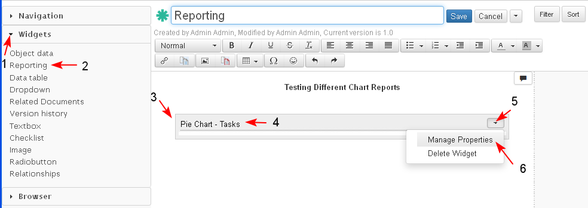
- The form for selecting criteria opens. By default the "Object to be displayed" option (1) with the Basic Search Form is selected.
- The user may use also the Advanced Search Form (2) in the widget to configure the query for the report.
- The user enters search criteria (3-4) and clicks "Search" (5). The results from the search are displayed (6).
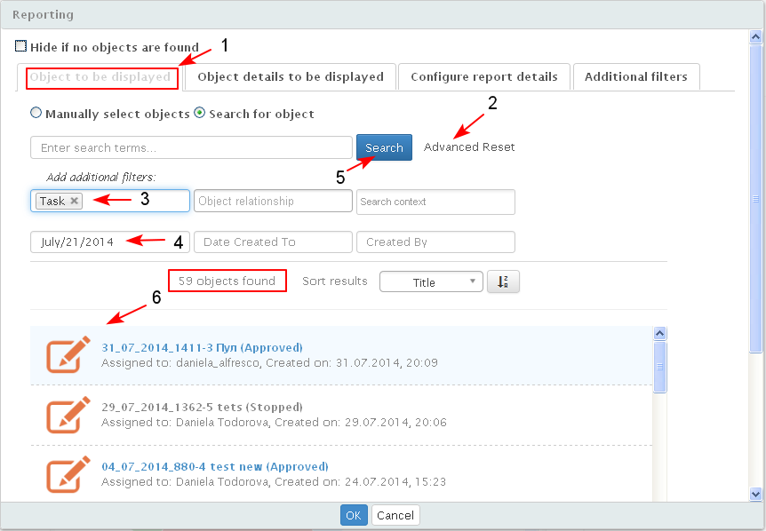
- The user selects "Configure report details" (1) to configure the reporting widget.
- The user selects the type of report visualization in the configuration window from the drop down list (2-3). The following types are available:
- raw table
- aggregated table (groups the results by one or two selectable properties)
- pie chart (group by one property)
- bar chart (groped by two properties)
- line chart (groped by two properties)
- The user selects the type of report visualization in the configuration window from the drop down list (2-3). The following types are available:
After the "Results display type" is selected, the user has the option to specify the "Group by" criteria for the corresponding report type.
Note:
- For table view the user specifies which criteria to be in rows and which in columns.
- If one of the group criteria is time the user has the additional option to specify the time interval - one of (hour, day, week, month, year).
- (Not Ready) The user has the option to select to view the results from the report in a aggregated table configured in the widget in an addition to a chart, clicking the "Display aggregated table" check box.
- The user selects from drop down list (4-5) the criteria by which the results to be grouped.
- The user may select the option the "Display Chart Legend" (6) and in the chart report a legend will be displayed.
- When the user is ready with the configuration, he/she clicks "OK" (7).
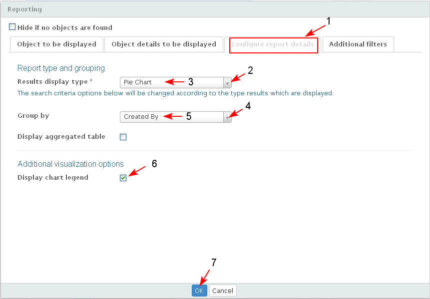
- The system displays the results of the selected report type (1-2) in the widget.
- If a section in the chart is overlapped with the cursor, the value of the selected group criteria is displayed (3).
- When the user is ready with the configuration he/ she saves the iDoc (4).
- If a section in the chart is overlapped with the cursor, the value of the selected group criteria is displayed (3).
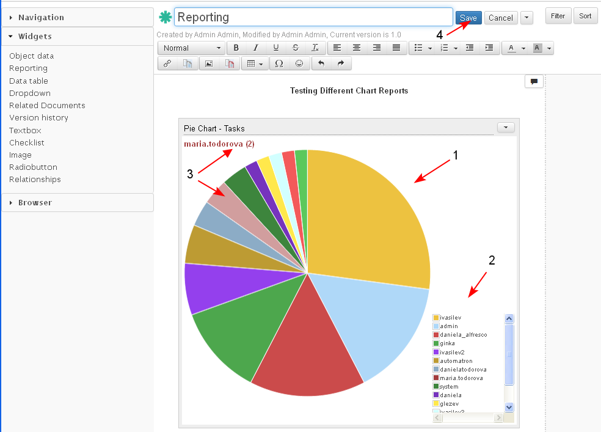
- The results from the report are displayed in the iDoc in a chart configured by the user.
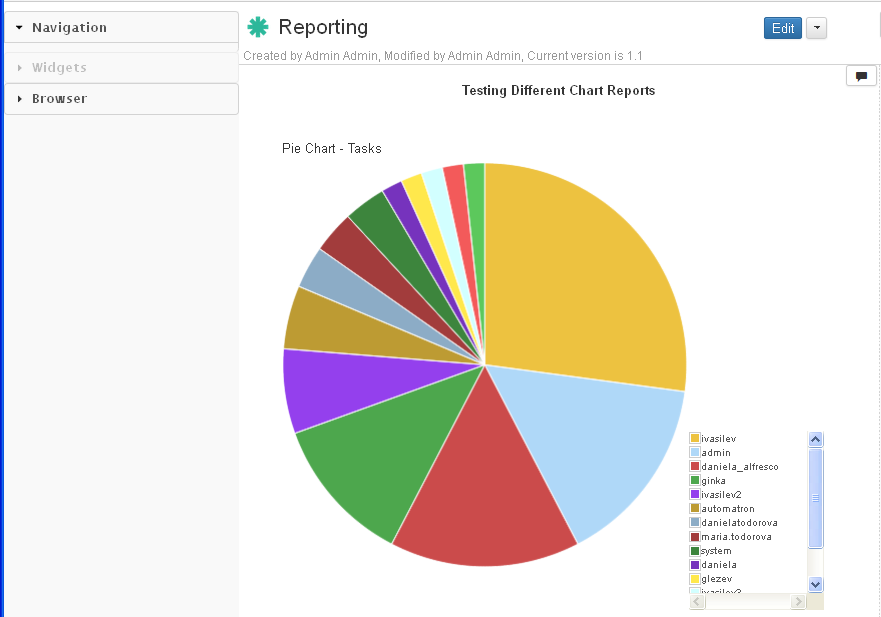
- When for the "Group by" criteria is selected a time dependent property then the user may choose the time interval in which the results to be displayed (1-2-3-4-5).
The example is with other selected objects.
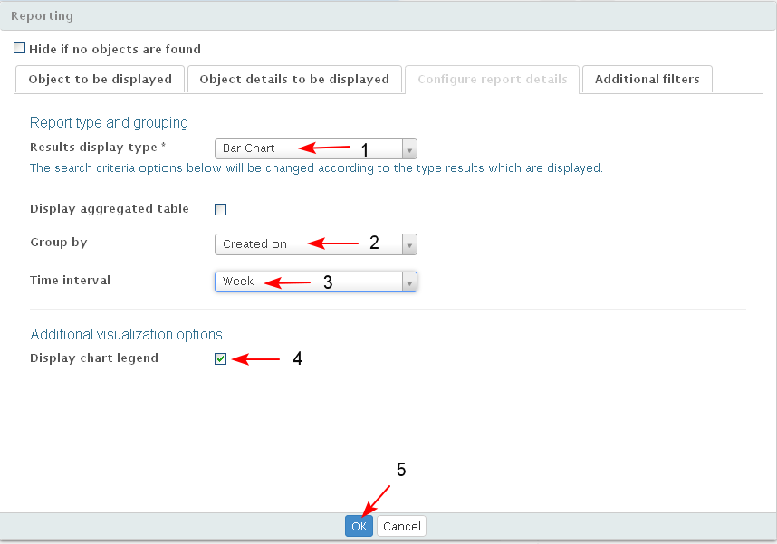
- The results are displayed grouped by date of creation by weeks:
Note: When the cursor is positioned in the chart than using the scroll button the user is able to zoom in or zoom out the chart for a better view on the results.
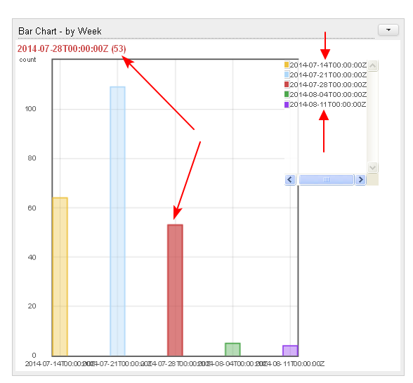
- Results in Line chart by Day:
Note: When the cursor is positioned in the chart than using the scroll button the user is able to zoom in or zoom out the chart for a better view on the results.
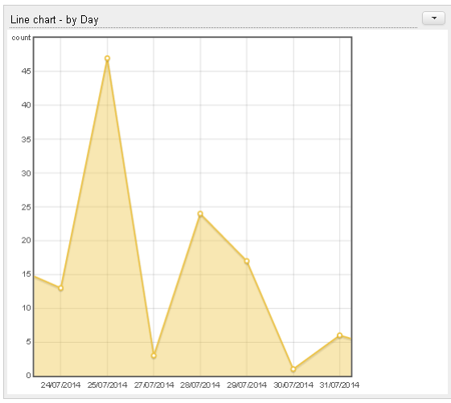
- When the user wants to display the results in a Raw Table he/she should select which details for the selected object type to be displayed in the table (1-2):
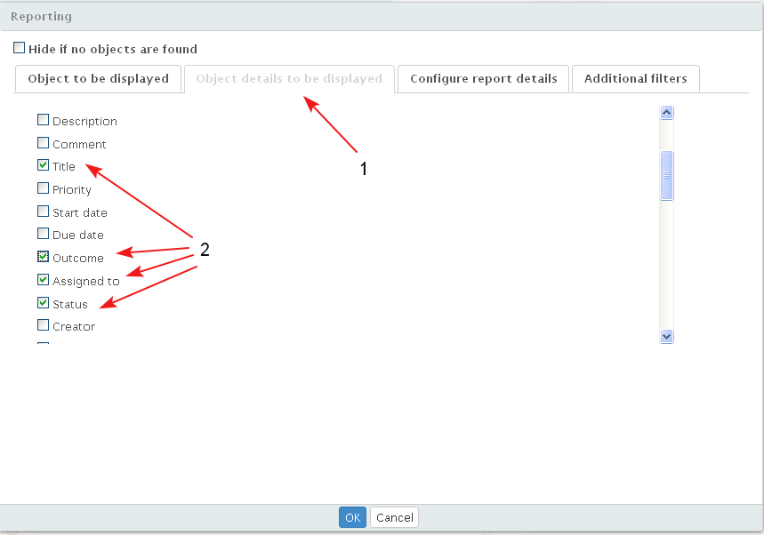
- The user configures the report to be in a raw table (1-2-3)
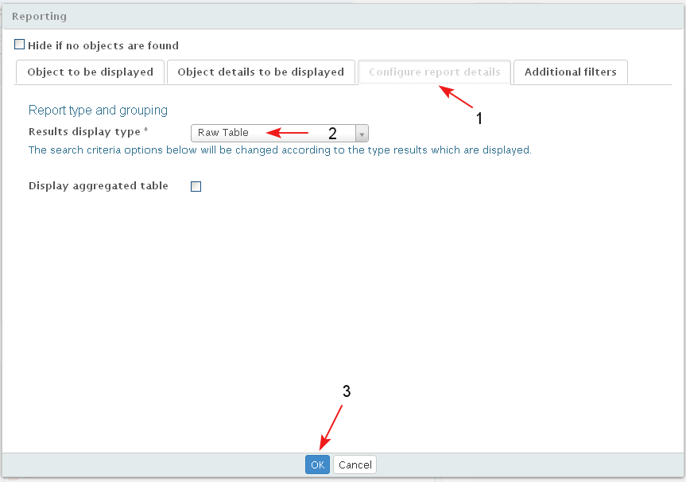
- The report is displayed in the widget in Raw Table view. The user has options to sort (1-2), to rearrange the columns and to hide/ show the columns (3) of the table .
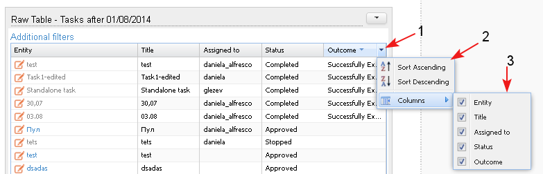
Use Additional Filters in Report
The user may use additional filters in reports.
- The user opens the iDoc with the report in edit mode and selects the action Manage Properties (1-2).

- The user selects tab "Additional filters" (1).
- When the user clicks in the empty field (2) the system opens a drop down list with all details of the object/s (selected in tab "Objects to be displayed").
- The user selects a detail for the additional filter (3).
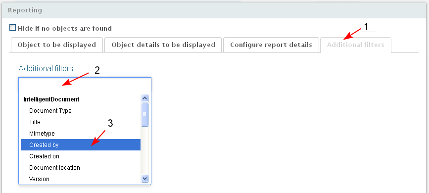
- The selected property appears as an additional filter (1). The user is able to add another filters clicking in the field (2) and selecting another property of the object.
- The user clicks "OK" (3).
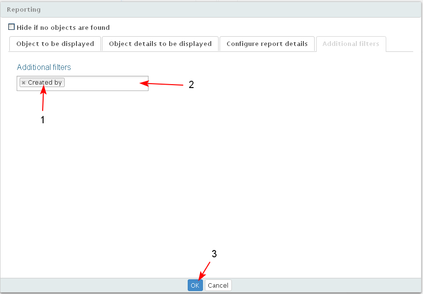
- The selected filter appears in the widget and may be opened by clicking the link "Additional filters" (1).
- The empty field/s for the filter/ s appear (2). The user enters part of text in the field (3) to filter the report and clicks the button "Search" (4).
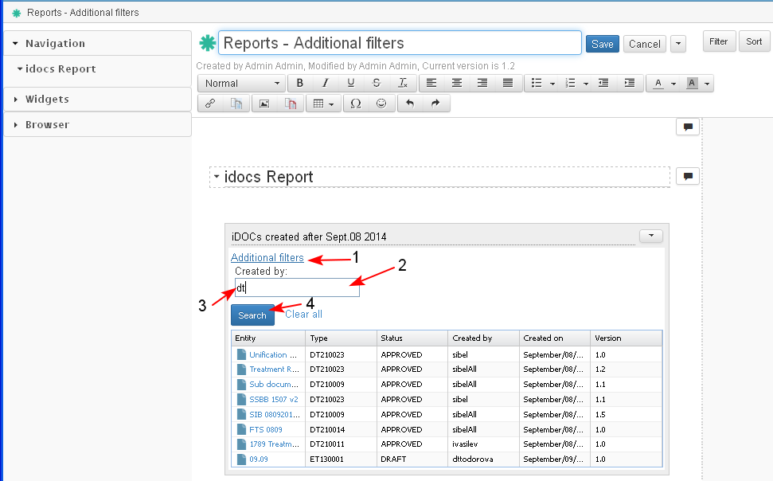
- The system displays the results for the applied additional filter (1) in the table.
- The user saves the iDoc clicking "Save" (2).
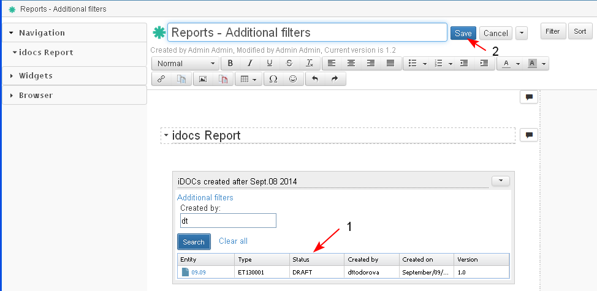
- The iDoc with the Reports Widget and the selected additional filter/s is saved in EMF.
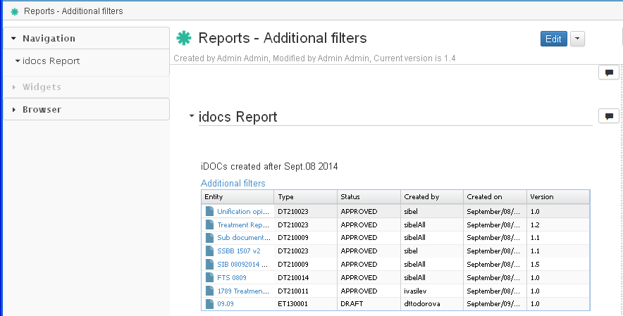